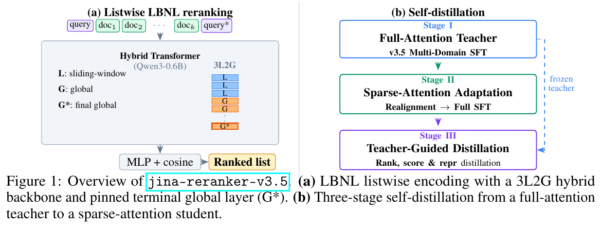
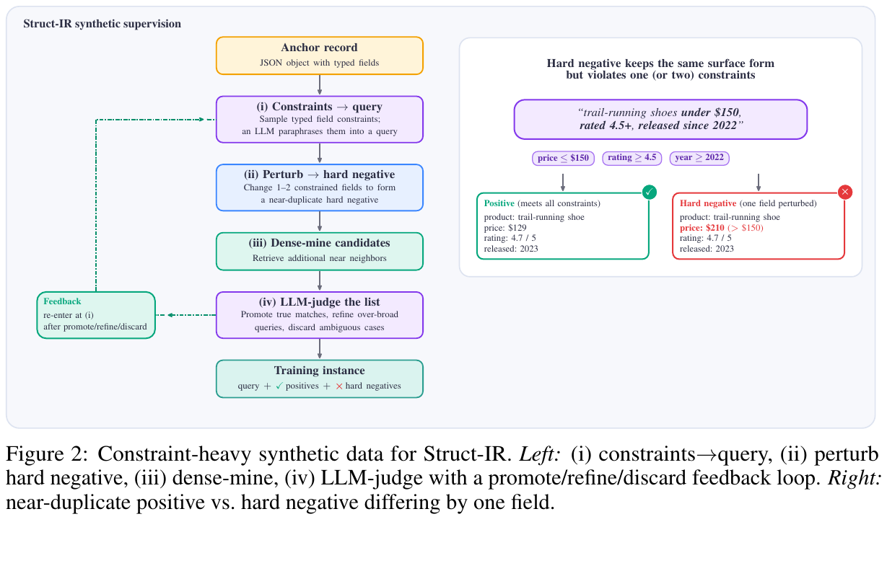

jina-reranker-v3.5 详解：混合注意力与同尺寸自蒸馏¶
paper：jina-reranker-v3.5: An Efficient Listwise Reranker with Hybrid Attention and Self-Distillation（Nasika, Wang, Krasakis, Xiao；arXiv:2607.18152，2026-07-20） model / code：jinaai/jina-reranker-v3.5 · HF 博客 refs：jina-reranker-v3 / LBNL · Qwen3 Embedding & Reranker · ColBERT · Gemma 3 局部-全局注意力 backbone：Qwen3-0.6B（28 层；3L2G 下 17 局部 + 11 全局） date：论文 2026-07；HF 博客 2026-08-05 modality：文本精排（listwise rerank） languages：多语（MIRACL 18 语；训练另含 WebFAQ 50+ 语、日语 Ruri-v3） license：非商用（Hugging Face 权重） scoring：LBNL 读出 → MLP \(1024\to512\) → 余弦；上下文 131072；滑窗 1024
本文把 「最后但不是迟」交互、为什么最后一层必须全局、失败模式优先的训练配料、同尺寸三阶段自蒸馏、BEIR / MIRACL / RTEB / Struct-IR 数字、以及该怎么选 写清楚。公式只保留真正用到的几条。
一句话定位¶
jina-reranker-v3.5 是一个 0.6B 的列表级精排器：一次前向把「查询 + 一堆候选文档」放进同一段上下文，让它们互相看见，再给每个文档打一个分数。它继承前作 v3 的 LBNL（last-but-not-late，最后但不是迟），但把「每一层都看全场」改成 三层近看、两层远看、最后一层必须远看，再用 和自己一样大的全注意力老师 把质量蒸回去。
落地时的口号可以记成三句：
- 一般检索榜（BEIR）63.20 nDCG@10，略过 4B 的 Qwen3-Reranker-4B，参数大约少 7 倍。
- 半结构化 / 字段约束 上比 v3 高 9.6 分，这是本代最大的跃迁。
- 长文档列表精排最多快 1.56 倍（短文本大约 1.22 倍）。
它是 v3 的 同 API 替换件：改模型 id 即可，不用改调用方式。
| 项 | 内容 |
|---|---|
| 参数 | 0.6B（与 v3 同体量） |
| 骨干 | Qwen3-0.6B，28 层，隐维 1024，GQA 16/8 |
| 注意力 | 3L2G：3 层滑窗（1024 token）+ 2 层全局，循环；末层钉死全局（G*） |
| 打分 | 特殊分隔符位置的隐状态 → 两层 MLP → 512 维余弦 |
| 训练 | v3 权重起步 → 全注意力老师 → 稀疏学生适应 → 多层蒸馏 |
| 一阶段召回（论文评测） | 一律用 jina-embeddings-v5-text-small 的 top-100 |
检索流水线里它站在哪¶
搜索系统通常分两段：
- 召回（embedding / BM25）：对整个库很快地捞出几十到几百条。便宜，但容易「看起来沾边、其实不对」。
- 精排（rerank）：只对这短名单做更仔细的比较，决定最终顺序。贵，所以名单不能太长。
Agent 系统会反复查、查很长的文档，精排会被调用很多次，贵和不准会叠乘。论文把生产精排要同时满足的四件事写得很直白：
- 快：一次给 100 条候选打分，不能把显存和延迟打爆。
- 领域扛得住：法律、医疗、金融、电商，跟网页抓取的「通用检索」不是同一种文字。
- 看得懂半结构化：JSON、表格、键值字段。相关与否取决于「价格 ≤ 150、评分 ≥ 4.5、年份 ≥ 2022」这种约束，而不是词面叠得多。
- 多语：库和查询经常不是同一种语言。
v3 已经把「列表级互相看见」这件事做成了 0.6B 上的强基线（BEIR 62.10），但 层层全局注意力太贵，训练又偏通用网页检索，半结构化和专业域偏弱。v3.5 要在 不丢掉互相看见 的前提下，把另外三件事补上。
它跟 Cross-Encoder、ColBERT 差在哪¶
精排常见三条路，别混：
| 路线 | 怎么看 query 和文档 | 文档之间能不能互相参照 | 贵在哪 |
|---|---|---|---|
| 逐对 Cross-Encoder（BGE-Reranker、Qwen3-Reranker 多数用法） | 每次把「query + 一篇 doc」拼在一起过模型 | 不能。每对单独打分 | 100 篇就要 100 次前向 |
| 迟交互 Late interaction（ColBERT） | query、doc 分别编码，存多向量，检索时 MaxSim | 不能。编码时彼此看不见 | 索引大；但文档可离线算 |
| 列表级 LBNL（jina-reranker-v3 / v3.5） | query 和 所有候选 进 同一段因果序列 | 能。一篇可以「对照」另一篇 | 一次前向；序列一长，全注意力就平方爆炸 |
LBNL 的直觉：把短名单当成一份「对照阅读材料」。查询放在最后，模型读完全部候选之后，用查询位置上的向量去和每个文档的分隔符向量比余弦。这既不是「一对一对地精读」（Cross-Encoder），也不是「各写各的笔记再对答案」（ColBERT）。
形式很短。查询 \(q\) 和候选 \(\{d_i\}\) 拼成一段，特殊 token 处得到 \(\tilde{\mathbf{q}}\)、\(\tilde{\mathbf{d}}_i\)，再投影：
\(P_\phi\) 是 \(1024\to512\to512\) 的两层 MLP。训练还带 InfoNCE 列表损失，以及 v3 里就有的分散、双匹配、相似度辅助项。
总览图：一边是怎么打分，一边是怎么把老师蒸进学生¶

图在讲什么。 左图是推理时真正跑的东西：查询和 doc1 … dock 排成一列，经过「近看 / 远看」混搭的 Transformer，末层 G* 保证排在最后的 query* 仍能看见名单最开头的文档；然后 MLP + 余弦吐出排序。右图是训练配方，不是推理图：先训一个「什么都看」的老师，再让学生戴上近看的眼镜适应，最后老师冻结、把分数和内部表示一起教给学生。
论文相对 v3 只改了三件事，对应图的两边：
- 注意力课表：大多数层改滑窗，但 最后一层钉死全局。
- 训练配料：法律 / 医疗 / 金融 / 多语 / 半结构化，按失败模式加料，而不是「再堆一亿对」。
- 蒸馏：老师和学生 一样大，只在「能不能看全场」上不同。
第三点值得单独说：通常蒸馏是大模型教小模型。这里不是。老师付平方级注意力的训练账单，学生部署时用更便宜的 3L2G。把「学路由」和「模仿老师输出」拆开，学生就不用同时做两件打架的事。
为什么「改成滑窗」会把 LBNL 弄坏¶
列表精排一次吃 100 篇，全自注意力的代价随序列长度 \(L\) 按 \(L^2\) 涨，KV cache 也胀。滑窗注意力（Longformer / Mistral 那一套）把每层从 \(O(L^2)\) 降到 \(O(L\cdot w)\)，看起来是白捡的。
在 LBNL 里，这招会直接砍断机制。查询的读出 token 坐在整段的末尾，它必须回头看到 第一篇 候选，才能形成「对照过整份名单」的表示。窗口只有 \(w=1024\) 时，名单一长，末尾就看不见开头。
所以设计约束是：
- 末层必须全局（图里的 G*）。作者试过把这一层也改成滑窗，列表排序会严重掉点。
- 其余 27 层在 1L1G / 1L2G / 3L2G / 5L1G 里搜。3L2G 最好：三层滑窗接两层全局，循环。28 层里 17 局部 + 11 全局，窗宽 1024。
- 全局层每隔三步出现一次，等于定期把「跨文档的远消息」刷新进网络，而不是全堆在开头或结尾。
- 更密的 1L1G / 1L2G 几乎不涨吞吐；更狠的 5L1G 在复杂多文档任务上变差。
和 Gemma 3 的「局部-全局交错」像，但生成模型可以用后面好多步生成来摊销上下文成本；精排 没有自回归输出预算，而且 读出约束是精排独有的。所以不能照搬生成模型的课表，必须把终端层钉死。
训练数据：先看它在哪摔倒，再决定加什么¶
配料原则不是「越多越好」，而是 失败模式优先。v3 的通用检索已经够用，缺的是专业域和字段约束。作者在 RTEB、STARK 的开发集上做错误分析，每一份新 shard 都对着「通用模型不会的那种检索」来。
难负例不来自单一检索器，而是 BM25、Jina、BGE、GTE、E5、ColBERT 一起挖，避免学生学会「只打某一个召回器的补丁」。标注稀的领域，用 LLM 按文档内容和领域相关性量规合成查询。
各 shard 在干什么（不必当百科）：
| 片 | 来源量级 / 代表集 | 为了补哪一块 |
|---|---|---|
| 法律 | EUR-Lex、CLERC、AILA、加拿大判例、瑞士摘要、EuroVoc；过采样 | 引用密、文档长、管辖区习惯 |
| 医疗 | MIRIAD 风格对话、生物医学引文、PubMed GPL 负例、BGE 里的 CMedQA 中文医问 | 临床措辞、实体堆叠 |
| 金融 | FiQA、金融 QA、RTEB 金融任务里的表感知段落 | 数字主张、监管用语、结构化财报 |
| 半结构化 | STARK 实体属性（拍扁成记录，不当成图去走）、Struct-IR；再加一串表 QA | 相等、数值/日期上下界、列表成员、跨字段逻辑 |
| 多语 | 在 MIRACL / mMARCO 之外加 WebFAQ（50+ 语）、SWIM-IR 跨语负例、Ruri-v3 日语对；MIRACL 负例用 v5-text-small 重刷 | 低资源语、跨语 |
表数据来源很杂：Open-WikiTable、NQ-Tables、OTT-QA、ESCI、TabFact、TAT-QA、SQA、WikiTableQuestions、HybridQA。相关与否靠 字段约束，不是词袋重叠。早期实验这块最差，所以采样权重最高，并专门合成「约束很重」的对。

图在讲什么。 左边是一条闭环：从一条 JSON 锚点记录抽出类型化约束，让 LLM 改写成自然语言查询；再改 1–2 个被约束的字段，造出「长得几乎一样、但踩了约束」的难负例；稠密检索再补邻居；LLM 当裁判——真匹配留下、问得太宽就改写、含糊的扔掉，反馈回查询生成。右边是为什么词面相似度在这里没用：正例和难负例可以是同一双跑鞋，只把价格从 129 美元改成 210 美元，查询写的是「150 美元以下」。人一眼能判，词袋模型会一起高分。
这和「用 LLM 海量造句」不是一回事：造的是 会让通用精排放过的那种近复制错误。
三阶段自蒸馏：先换眼镜，再模仿老师¶
老师和学生都是 0.6B，差别只在注意力。如果一上来就切 mask、又要分数对齐，两头都会差。所以拆开：
阶段 I · 全注意力老师。 从公开的 jina-reranker-v3 出发，在 v3.5 全量配料上做全参微调，不许滑窗。老师的分数代表「这个参数量、这份数据上，全看见时的上限」。学习率 \(6\times10^{-6}\)，最多 25k step，每 query 约 45 个难负例。
阶段 II · 让学生适应近看。 用阶段 I 的权重初始化，打开 3L2G。先 只训注意力投影、冻住 MLP / embedding / 头——教会新 mask 怎么走路，先别把已经学好的表示拆掉。再解冻全参（可选 LoRA），让中间表示贴上新的几何。这一步结束，学生 已经能部署、已经更快，但 BEIR、RTEB-legal、MIRACL 上仍稳定落后老师。注意力-only 热身 \(5\times10^{-5}\)，再全参 \(6\times10^{-6}\)，各最多 15k step。
阶段 III · 老师盯着蒸。 老师冻结。学生同时对齐四层，外加两条自监督：
| 项 | 白话 | 权重 |
|---|---|---|
| \(\mathcal{L}_{\mathrm{rank}}\) | 列表上 softmax 后的 KL，保相对名次，不怕分数整体平移 | 主项；温度 \(\tau=0.25\) |
| \(\mathcal{L}_{\mathrm{score}}\) | 分数本身的 MSE，保绝对尺度和间隔 | \(\beta_1=0.65\) |
| \(\mathcal{L}_{\mathrm{state}}\) | 最后一层隐状态逐位置 MSE | \(\beta_2=0.65\) |
| \(\mathcal{L}_{\mathrm{embed}}\) | 投影后 query/doc 向量的余弦距离 | \(\beta_3=0.65\) |
| \(\mathcal{L}_{\mathrm{sim}}\) / \(\mathcal{L}_{\mathrm{disp}}\) | 上下文块相似分类 + token 分散，防止稀疏注意力把空间挤塌 | \(0.65\) / \(0.25\) |
老师前向能缓存就缓存。法律偏重、BGE 偏重、长文 MLDR 等 分域各蒸一版，再按开发集上的 RTEB / BEIR nano 线性插值合并。
顺序不能倒：只做阶段 II、不对齐老师，缺口还在；几何适应完再蒸，才能把全注意力的能力大部分搬进滑窗学生。配方是为 3L2G 写的，但「先适应 mask、再对齐输出」可以搬到别的注意力课表错位上。
公共训练细节：FlashAttention-2、bf16、列表最多 50 篇、随机打乱文档 id / 位置 id（v3 就有，防列表位置捷径）。
评测怎么比，数字怎么读¶
统一协议（除非另说）：
- 一阶段：jina-embeddings-v5-text-small 召回 top-100
- 二阶段：列表精排；指标一律 nDCG@10
- 全员在 同一套 MTEB v2 流水线 里重测，和厂商自己报的数可能略有出入
- ArguAna、Quora 开任务 LoRA
- 对比：v3、Qwen3-Reranker-0.6B / 4B、mxbai-rerank-base-v2 / large-v2
四张总表¶
| 模型 | 参数 | BEIR | MIRACL | RTEB ‡ | Struct-IR † |
|---|---|---|---|---|---|
| jina-embeddings-v5-text-small（只召回） | 0.5B | 56.26 | 65.15 | 64.60 | – |
| Qwen3-Reranker-0.6B | 0.6B | 56.94 | 67.12 | 68.41 | 41.9 |
| mxbai-rerank-base-v2 | 0.5B | 59.58 | 64.90 | 61.44 | 30.4 |
| jina-reranker-v3 | 0.6B | 62.10 | 72.20 | 68.01 | 38.7 |
| mxbai-rerank-large-v2 | 1.5B | 62.45 | 69.65 | 70.81 | 43.0 |
| Qwen3-Reranker-4B | 4.0B | 62.28 | 76.56 | 77.68 | 55.6 |
| jina-reranker-v3.5 | 0.6B | 63.20 | 74.11 | 70.95 | 48.3 |
‡ RTEB 不含 MIRACL 均分。† Struct-IR 是 受控候选池（见下），不能和 SSRB 检索榜直接比。
怎么读这张表：
- BEIR（英文零样本 13 集）：v3.5 定义了「又小又好」的前沿，4B Qwen 和 1.5B mxbai 都没买到更高的 BEIR。
- MIRACL（18 语）：0.6B 里最强（74.11），仍落后 4B Qwen 的 76.56。涨分最大的语种：约鲁巴 +4.4、波斯 +3.1、法语 +3.0，和多语配料对得上。印尼 / 法 / 西绝对值仍难；泰卢固 / 泰 / 约鲁巴普遍高。
- RTEB（法律 / 金融 / 编程 / 医疗）：70.95，超过同尺寸 Qwen 和 1.5B mxbai，离 4B Qwen 的 77.68 还有一截，缺口集中在少数法律、医疗题。
- Struct-IR：相对 v3 +9.6 nDCG@10，本代最大单项。
专业域：法律涨得最狠¶
RTEB 里相对 v3 的大头在判例：
| 数据集 | v3 | v3.5 | 差值 | 备注 |
|---|---|---|---|---|
| AILA-Statute | 32.15 | 46.16 | +14.0 | 法条检索，训练配料对准的那种 |
| AILA-Case | 20.82 | 32.55 | +11.7 | 判例；仍低于 4B Qwen 的 48.42 |
| LegalQuAD | 81.84 | 83.09 | +1.3 | v3 已经强 |
| FinQA | 85.87 | 86.91 | +1.0 | 全场最高（含 4B） |
| Apps / DS1000 | 74.94 / 61.94 | 76.57 / 66.20 | +1.6 / +4.3 | 编程中等涨 |
| ChatDoctor | 69.63 | 70.63 | +1.0 | 医疗涨得少 |
| CUREv1 均分 | 62.04 | 62.20 | +0.16 | 几乎持平 |
白话：给法律长文和引用密度加料，精排真的会在判例上抬一大截；医疗这块配料还没把 4B 通用模型的差距补平。FinQA 说明「数字 + 表」的合成不是白做。
半结构化：协议先读，再看分¶
Struct-IR 的库按 schema 能到百万级对象，一阶段 in-schema Recall@5 大约 0.04。端到端 retrieve-then-rerank 几乎被召回绑死，分不出精排好坏。论文改成：每条 query 把全部金标塞进池子，再加 30 个最难的一阶段干扰项。测的是「字段约束下能不能把对的挑出来」，不是「库有多大还能找回」。
这个协议下 v3.5 宏均 Recall@5 / nDCG@10 = 23.1 / 48.3，相对 v3 的 17.9 / 38.7。HR、LLM-Agent、Resume 涨得最多；Resume 的 Recall@5 与 4B Qwen 打平（20.5）。仍然只有 4B Qwen 整体更高（26.4 / 55.6）。
STARK（Amazon / MAG / Prime 知识库，官方协议，实体属性渲染成带关系的散文）：v3.5 的 Hit@1 / Hit@5 / MRR = 45.0 / 65.4 / 53.8，Hit@5 全场最好；MAG 三项全领先。Qwen 两条在 STARK 上明显弱（4B 的 Hit@1 只有 32.5），说明「大」不等于「字段 + 关系」自动变好。
速度：长名单、长文档才真正赚¶
A100、batch=1、top-100、FlashAttention-2：
| NQ（短，query 10 / doc 146 token） | AILA 判例（长，query 690 / doc 1904 token） | |
|---|---|---|
| v3 延迟 | 371 ms | 16.1 s |
| v3.5 延迟 | 305 ms | 10.3 s |
| 加速 | 1.22× | 1.56× |
| 文档吞吐 | 270 → 328 /s | 6.2 → 9.7 /s |
列表精排几乎就是一次对新候选集的 prefill。长文档上局部层从 \(O(L^2)\) 降到 \(O(L\cdot 1024)\)，省下的时间可以直接换成「名单更长」或「单篇更长」。
和谁比、什么时候用它¶
| 你手头的情况 | 更合适的选择 | 原因 |
|---|---|---|
| 已经在用 jina-reranker-v3 | 直接换成 v3.5 | 同 API、同 0.6B；领域和半结构化明显更好，还更快 |
| 只要英文通用检索、预算紧 | v3.5 或 mxbai-large | BEIR 上 v3.5 已贴/超 1.5B–4B |
| 多语为主、能接受 4B | Qwen3-Reranker-4B | MIRACL 76.56 vs 74.11 |
| 法律判例 / JSON 商品 / 字段过滤查询 | v3.5 | 配料就是冲这个来的；4B 在部分法律题仍更高 |
| 医疗对话要做到极致 | 先看 4B Qwen；v3.5 只小涨 | RTEB 医疗缺口还在 |
| 要商用、不能接受非商用协议 | 换 Apache/MIT 精排（Qwen3-Reranker、bge-reranker） | v3.5 权重非商用 |
| 必须离线索引、不能每次带 100 篇进 GPU | embedding / ColBERT，而不是这个 | LBNL 是在线列表精排 |
和 BGE-Reranker 的差别：BGE v2.5 是 9B LLM 当逐对精排 + 深宽压缩；Jina v3.5 是 0.6B 列表级、候选之间能互相看见。一个拼单对精度和可调 FLOPs，一个拼「一次看完整份短名单」和部署体积。
和 Qwen3-Reranker-0.6B：同尺寸下 v3.5 在 BEIR / MIRACL / 半结构化上大幅领先；Qwen 0.6B 的 BEIR 只有 56.94，几乎没比一阶段 embedding 好多少。
关键数据集简介¶
评测集（论文当考卷）：
- BEIR：13 个异构英文检索集的零样本包，看通用搬家能力。
- MIRACL：18 种语言的维基检索，资源从高到低都有。
- RTEB：面向企业域的检索包（法律、金融、编程、医疗），术语和「何谓相关」跟网页搜索不一样。
- Struct-IR / SSRB：海量异构半结构化对象，自然语言问字段约束。
- STARK：文本 + 关系的知识库检索（商品、论文、生物医学实体）。
训练侧多出来、且值得记名字的：
- AILA / CLERC / EUR-Lex：判例与立法，长、引用密。
- FiQA / FinQA / TAT-QA：论坛投资问答、需要算的金融问答、表+文混合。
- ESCI：电商查询与商品，相关 / 替代 / 互补 / 不相关。
- WebFAQ / SWIM-IR / Ruri-v3：多语 FAQ、跨语难负例、日语精排对。
局限，以及能搬走的做法¶
论文自己点名的硬伤：
- 列表精排固有上限：候选条数、总 token 长度仍被模型上下文卡住。逐对模型和迟交互没有这个「必须一次塞进窗口」的限制。
- 4B 通用模型没被完全追上：RTEB 法律/医疗、受控池 Struct-IR、MIRACL 低资源语，仍是难点。
- 阶段 II 能不能缩短，只在「全注意力 → 3L2G」这么大的错位上验证过；更温和的课表差异未必需要同样长的适应。
可搬走、不必复制整份模型的做法：
- 读出层钉死全局：任何「查询在末尾、要看见全名单」的列表模型，都不要把最后一层改成滑窗。
- 失败模式配料：用开发集错误分析决定加哪一类数据，比盲目扩通用对更有效。法律过采样、半结构化最高采样权重，是冲着「难且标注贵」去的。
- 近复制难负例：改一两个约束字段，专治词面捷径。
- 同尺寸、不同结构的蒸馏：先适应新几何，再 KL + 分数 MSE + 隐状态 + 向量余弦一起对齐。
- 分域蒸完再插值：比「一份大杂烩蒸到死」更容易保住法律 / 长文 / 通用的平衡。
工程提醒：评测绑定的一阶段是 jina-embeddings-v5-text-small。换别的召回器，精排绝对分会变，但「字段约束 + 法律长文」的相对优势大概率还在。权重 非商用；Elastic 9.3+ 的托管推理、Jina API 是另一条合规路径。
读完可以记住的三句话¶
- v3.5 不是把 Cross-Encoder 变小，而是把 「一整份短名单对照着读」 这件事，用滑窗做便宜、用末层全局保住。
- 最大的产品价值不在 BEIR 再涨 1 分，而在 JSON / 表 / 判例 这种「通用网页模型会装懂」的数据。
- 蒸馏的新意是 老师不更大，只看得更全；搬家时先让学生习惯近看，再去抄老师的分数。